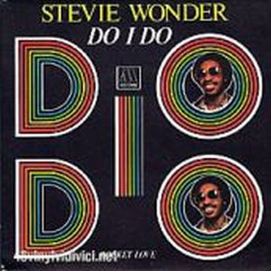
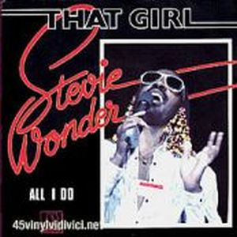
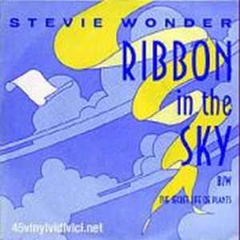
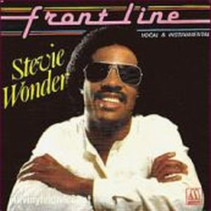

Musiquarium is a double LP compilation of the best hits of the 70s including the Hotter Than July from the 80, more four new songs: "Front Line, and other 3 real gems like "Do i do", "Ribbon in the Sky" and "That Girl".
Disco essential if we want to have -albeit in a small part- unforgettable songs of the most glorious years of Stevie Wonder. Little more can be said about this compilation in which
Stevie Wonder plays the most instruments, as usual, and it leaves us in anticipation of its musical evolution in this new decade.



